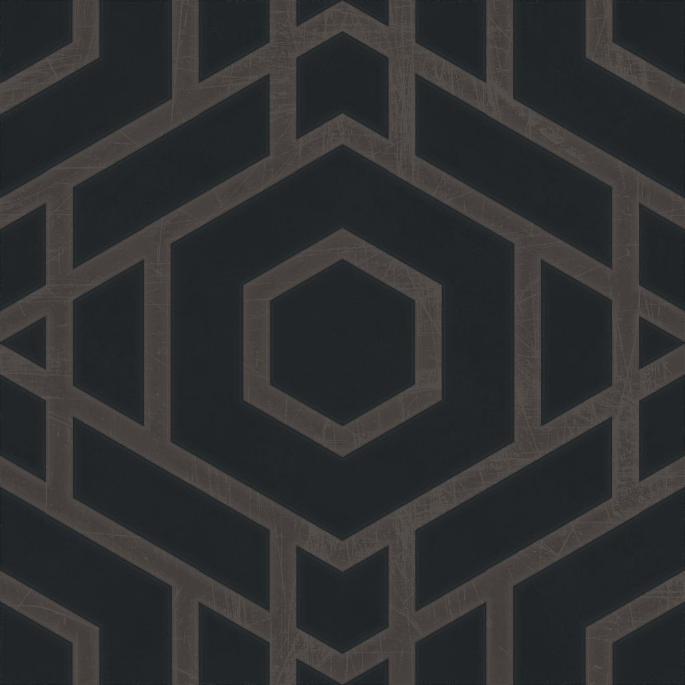
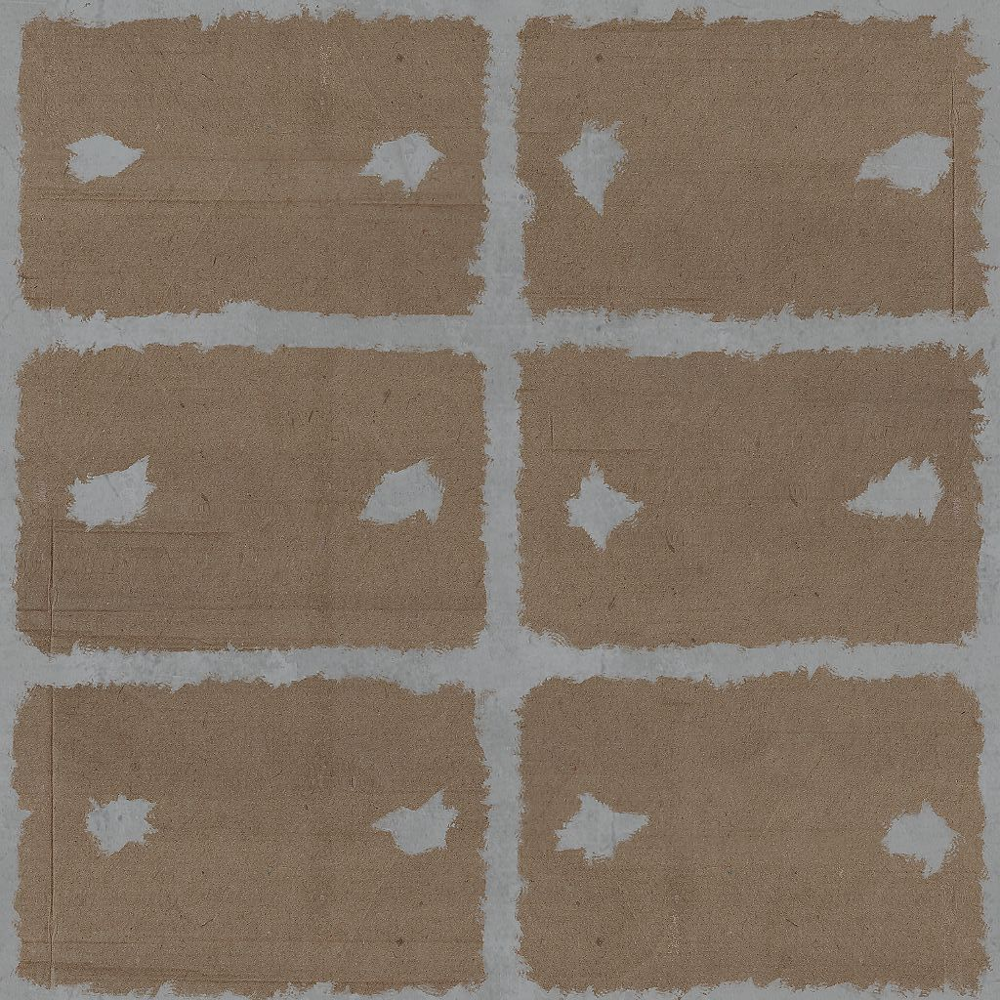

Out: Friday March 24, 2017
Due: Friday April 14, 2017 at 11:59pm
Work in groups of up to 4
In this programming assignment, you will implement a simple maze crawler that is operated by keyboard.
First, clone the CS 4620 web repository.
You will find the template code for this assignment in the cs4621/ppa03_student directory.
Inside the directory, open index.html, and you should see a web page with a black canvas
and some controls.
Please modify index.html so that it implements the maze crawler whose behavior is similar
to the one in the video. You may also add other code to the directory. However, do not use any 3D rendering
framework such as three.js. Linear algebra libraries such as
glMatrix and convenience libraries such as
jQuery and PreloadJS
are fine. In fact, we have included in the distributed starter code.
Implementing a complete maze crawler is only one part of this assigment (70% of the grade). To get full credit (the rest 30%), you have to implement at least one additional feature that are listed later in this writeup.
Once you're done writing your solution, ZIP the cs4621/ppa03_student, and submit
the ZIP file to CMS.
A maze is a rectangular grid divided into equally sized cells. A cell is a square in the $xy$-plane whose size is $1 \times 1$ (in some unit). There are two types of cells: walkable and unwalkable. If a walkable cell is adjacent to an unwalkable cell, there must be a vertical wall on their common cell edge. A vertical wall is also a flat square whose size is also $1 \times 1$. One of its dimension is the $z$-axis, which is our vertical axis.
A maze is specified by its text representation that is entered into the "Maze" text area in
index.html. The text representation may contain the following types of characters:
\n.#, representing an unwalkable cell.., representing a walkable cell.N, E, W, or S,
representing a walkable cell that the camera is initially at. The four characters represent
the initial "heading" of the camera. Heading is the 2D direction in the $xy$-plane of the
view direction. It is specified as the angle the view vector makes with the
positive $x$-axis.
N is the "north" direction $(0,1,0)$ and the heading is $\pi/2$.E is the "east" direction $(1,0,0)$ and the heading is $0$.W is the "west" direction $(-1,0,0)$ and the heading is $\pi$.S is the "south" direction $(0,-1,0)$ and the heading is $3\pi/2$.A valid string representation must satisfy the following conditions:
#.
The template code has a function that check the above conditions. If one of them is not satisifed, the code will throw an exception, and the program will stop. As a result, you don't have to worry about them when you program, but you should keep them in mind when editing the string representation to test your program.
The string representation represents what the maze looks like if you look at it from above (i.e. from where the $z$-coordinate is high). If the string representation has $h$ rows and $w$ (non-whitespace) characters in each row, then there are $w \times h$ cells in the maze, and the maze should occupy the rectangle $[0,w] \times [0,h]$ in the $xy$-plane. The character at the bottom left corner of the string representation corresponds to the cell whose bottom left corner is at $(x,y) = (0,0)$. The character at the top right correponds to the cell whose bottom left corner is $(x,y) = (w-1,h-1)$.
From now on, let us refer to the cell that occupies the rectangle $[a,a+1] \times [b,b+1]$ in the $xy$-plane as the $(a,b)$-cell.
When the camera is not moving to another cell (as a response to a keyboard input), it should be located at the middle point of a walkable cell. In other words, the $xy$-position of the camera should be at $(a+0.5,b+0.5)$ where $(a,b)$ is a walkable cell.
When the camera is not turning, her heading should be equivalent to $0$, $\pi/2$, $\pi$, or $3\pi/2$. In other words, no stopping at any other directions besides NEWS.
When the user presses the up arrow, the camera should move to the tell in front of the current cell according to the current heading if the cell in front is walkable. The canvas should show a smooth transition to the new location, and this should not take too much time. If the cell in front is not walkable (i.e. the camera is in front of a wall), the camera should stay at the same place.
The system should exhibit similar behavior when the down arrow is pressed. However, the camera should move backward instead of forward.
When the user presses the left arrow, the camera should increases its heading by $\pi/2$. The canvas should show a smooth transition to the new heading, and this should not take too much time.
The system should exhibit similar behavior when the right arrow is pressed. However, the heading should decreases by $\pi/2$ instead of increasing by that amount.
The $z$-position of the camera's position should be specified by the value in the "Eye height" spinner.
When constructing the projection matrix, its field of view (in degrees) should be specified by the value in the "Field of view" spinner.
We have provided textures to use to indicate the floor and the wall in the ppa03_student/data
folder:
|  |  |
ppa03_student/data/floor.jpg
(Source)
|
ppa03_student/data/wall.jpg
(Source)
|
We got these textures from OpenGameArt. They are created by yughues and are listed as belonging to the public domain.
The sky color we used is RGB = $(0.3, 0.7, 1.0)$. You don't have to use the exact same color, but choose it so that it's clear which part is the background.
The template code has a global variable called maze that is updated every time
the "Update Maze" button is clicked. The variable contains an object which the following fields:
sizeX = the number of cells in the $x$-direction.sizeY = the number of cells in the $y$-direction.startHeading = the initial heading of the camera in radian.startPosition = a two-element array containing the initial cell.data = a two-dimensional array containing integers which indicate
whether the cells are walkable or unwalkable.
data[x][y] = 0, then the $(x,y)$-cell is walkable.data[x][y] = 1, then the $(x,y)$-cell is unwalkable.
You can get the field of view in radian by calling the getFov() function.
Call this function every frame.
You can get the height of the eye by calling the getEyeHeight() function.
Call this function every frame.
Using glMatrix, you may construct the projection matrix with the following command:
var projMat = mat4.create(); mat4.perspective(projMat, getFov(), 800.0 / 600.0, 0.1, 100.0);
In order to get full credit, you have to implement at least one of the following additional feature.
Better shading of floor and walls. The reference solution just display the texture without any modification. Implement shading with normal mapping as you did in A4. You can find the normal maps of the textures in the "Source" links we provided above. You have the freedom of choosing the positions of the light sources, but make sure that all walls and every part of the floor is lit.
Sky box. The sky looks really bland right now. Implement a fancier sky box using some textures that can be found here.
Insert other objects in the maze. Treasure boxes. Dropped monies. Zombies. You name it. Modify the string representation parser so that these objects can be placed in the scene by modifying the string representation.